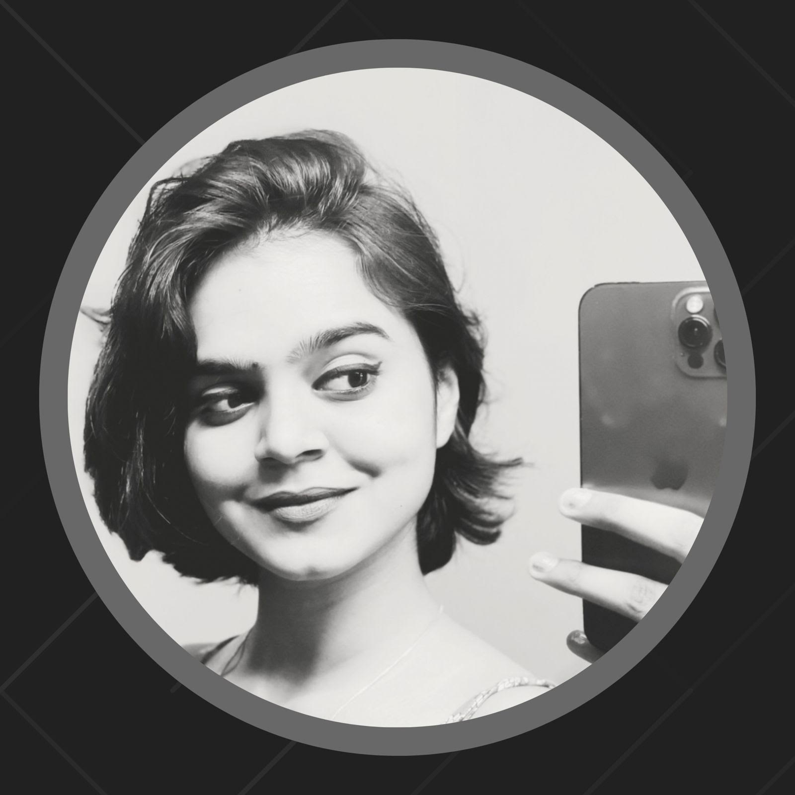
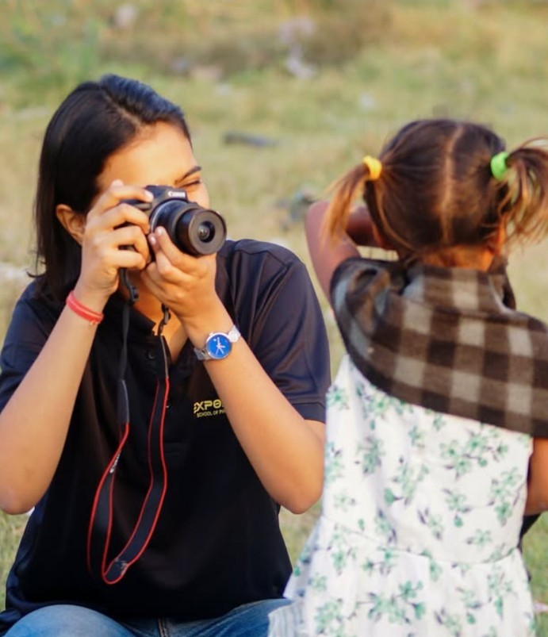
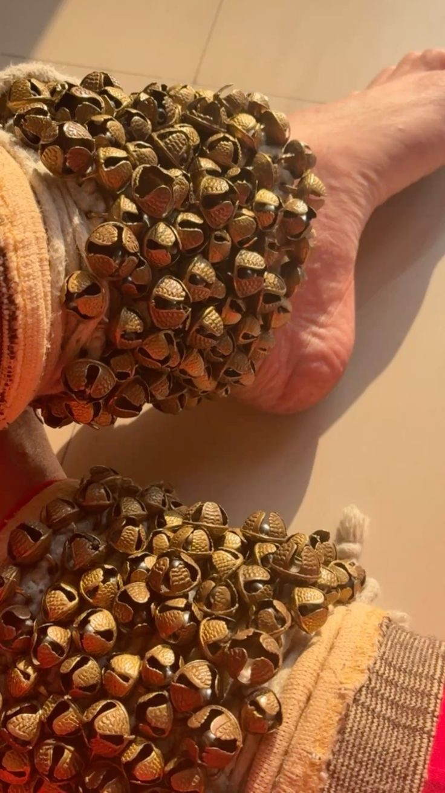
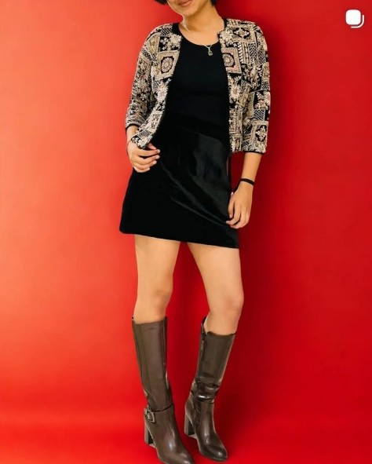

creating quietly. observing deeply.
I am a motivated and thoughtful individual with a strong inclination towards creativity, entrepreneurship, and building meaningful ideas. I enjoy working on projects that allow me to combine strategic thinking with visual expression, and I constantly look for opportunities to grow through hands-on experiences. I believe in approaching work with patience, attention to detail, and a long-term perspective.
As a person, I am observant, curious, and driven by purpose. I prefer understanding the deeper aspects of problems and creating solutions that are both practical and impactful. I value originality, consistency, and learning from real-world experiences. My approach towards work is calm and focused, and I aim to continuously improve my skills and broaden my understanding of business and leadership.
Looking ahead, I aspire to build and contribute to ventures that create meaningful impact while reflecting creativity and innovation. My future goals include strengthening my foundation in business strategy, leadership, and brand development, and eventually establishing initiatives that combine creativity with sustainable growth. I aim to develop into a confident professional who can lead projects with clarity and purpose.

Photography allows me to tell stories through visuals and capture emotions that words often cannot express. I enjoy experimenting with composition, light, and mood to create meaningful frames. My focus lies in aesthetic storytelling, product photography, and capturing subtle details that reflect personality and atmosphere.

Kathak connects me deeply with Indian culture and tradition. Through rhythm, expressions, and storytelling, it has helped me develop discipline, grace, and confidence. It allows me to express emotions artistically while staying rooted in cultural heritage.

I enjoy modelling and contributing creatively to Kaira Collection by experimenting with styling, poses, and visual storytelling. This helps me understand brand presentation and audience perception. Through this, I actively contribute to building a cohesive aesthetic and creative identity for the brand.